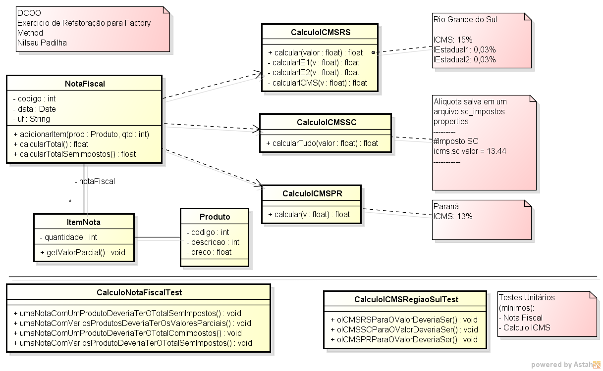
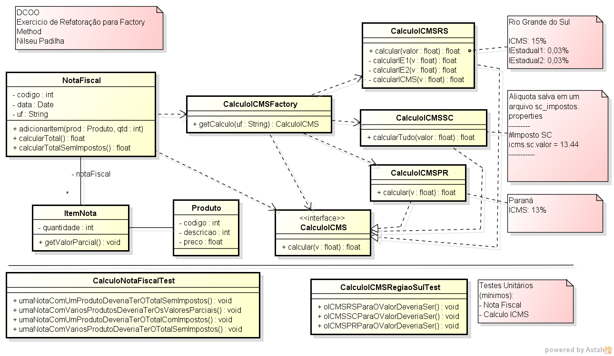
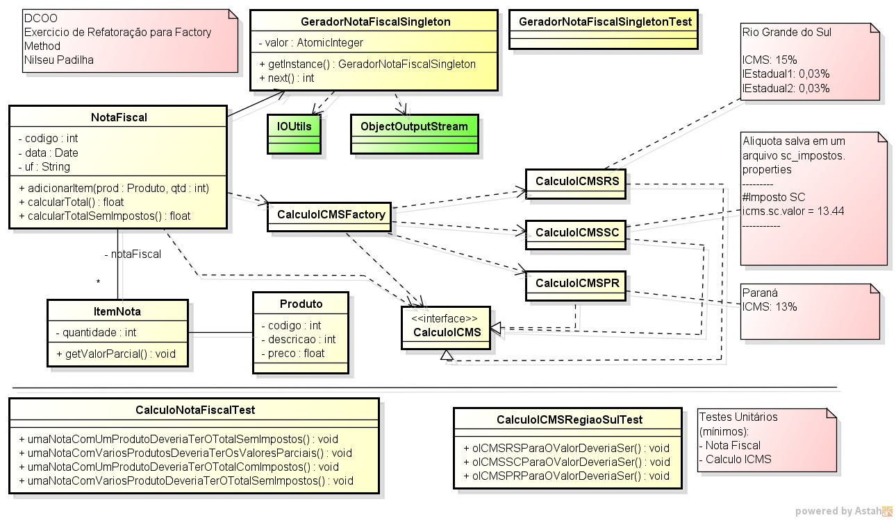
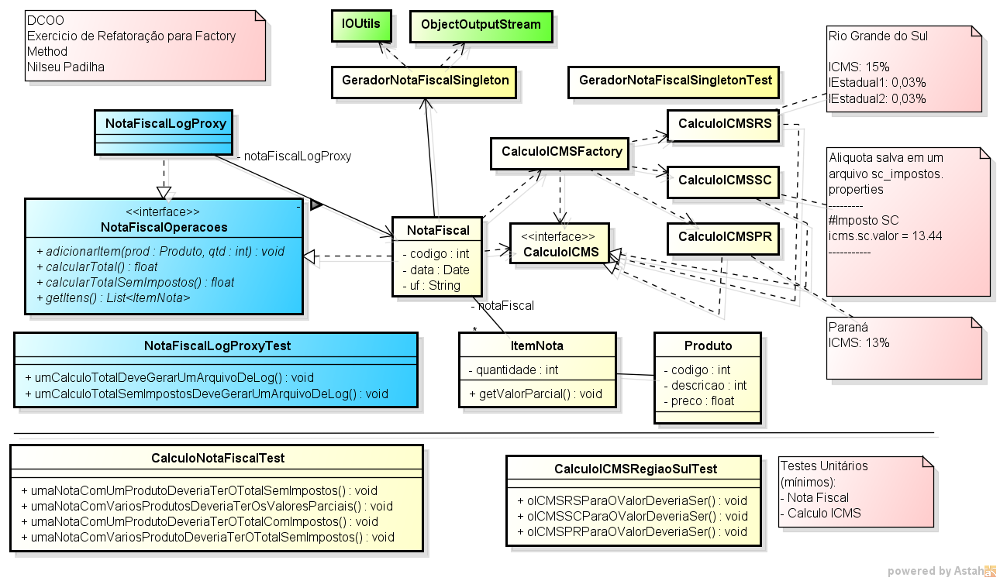

O trabalho será refatorar um modelo de cálculo representado abaixo:

Neste modelo deve ser aplicafo o padrão GOF FACTORY METHOD resultando no modelo abaixo:

O trabalho deve ser implementado usando o MAVEN e O GIT, apresentando o histórico de modificações. As tarefas nesta ordem são sugeridas, mas não restritivas, desde que demonstrem a evolução gradual do exercício
CalculoICMSCalculoICMSRS CalculoICMSSCCalculoICMSPRICMSFactoryNotaFiscalObs.: Cada tarefa deve ser commitada com código compilado e testado
Acople ao sistema um Gerador de Número de Notas Fiscais. O número da nota deve ser persistido em arquivo. Conforme a imagem abaixo:

GeradorNotaFiscalSingleton usando as classes da API java AtomicInteger e ObjectOutputStream e a classe IOUtils da biblioteca commons-ioNotaFiscal${projectdir}/DB que conterá o arquivo de sequenciaFoi definido pelo cliente que o Módulo de Cálculo de ICMS deve suportar a escrita de LOGS Diários para cada operação.
Cada arquivo deve ter o nome conforme o seguinte padrão:
YYYY-MM-DD-{UF}.log
O conteúdo do arquivo são as operações de cálculo realizadas no dia correspondentes a cada estado no formato:
{NumNotaXXX}-YYYY-MM-DD-{MetodoCalculo}-{TOTAL}-{Prod1(Cod1, Preco1), Prod2(Cod2, Preco2), ProdN(CodN, PrecoN)}
{NumNotaXXY}-YYYY-MM-DD-{MetodoCalculo}-{TOTAL}-{Prod1(Cod1, Preco1), Prod2(Cod2, Preco2), ProdN(CodN, PrecoN)}
Não deverá ter nenhum código de log na classe NotaFiscal. A lógica de gravação de logs em arquivo deve ser posta na classe NotaFiscalLogProxy e os registros e arquivos de log devem ser salvos na pasta

NotaFiscalOperacoes e implementar o proxy NotaFiscalLogProxy com a lógica de registro de cálculos.${projectdir}/DB1 Joshua Kerievsky(2004) - Refactoring to Patterns ( amazon )
2 IOUtils